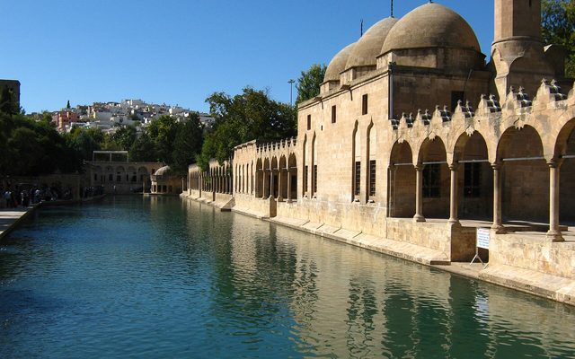

史前与新石器时代
公元前 12.000 – 3000 · 8 个地点


青铜时代与赫梯
公元前 3000 – 1200 · 16 个地点
 阿尔斯兰泰佩遗址马拉蒂亚 · 铜石并用时代 / 青铜时代 / 新赫梯
阿尔斯兰泰佩遗址马拉蒂亚 · 铜石并用时代 / 青铜时代 / 新赫梯 哈图沙乔鲁姆 · 赫梯
哈图沙乔鲁姆 · 赫梯 特洛伊古城恰纳卡莱 · 青铜时代 / 罗马
特洛伊古城恰纳卡莱 · 青铜时代 / 罗马 阿拉贾霍裕克博物馆与遗址乔鲁姆 · 青铜时代 / 赫梯
阿拉贾霍裕克博物馆与遗址乔鲁姆 · 青铜时代 / 赫梯 恩科米（阿拉西亚）遗址加齐马古萨（法马古斯塔） · 青铜时代
恩科米（阿拉西亚）遗址加齐马古萨（法马古斯塔） · 青铜时代 费特希耶特洛斯遗址穆拉 · 青铜时代 – 奥斯曼
费特希耶特洛斯遗址穆拉 · 青铜时代 – 奥斯曼 哈兰遗址尚勒乌尔法 · 青铜时代 – 中世纪
哈兰遗址尚勒乌尔法 · 青铜时代 – 中世纪 亚索斯遗址穆拉 · 青铜时代 – 拜占庭
亚索斯遗址穆拉 · 青铜时代 – 拜占庭 卡曼卡莱霍裕克考古博物馆克尔谢希尔 · 青铜时代 / 铁器时代
卡曼卡莱霍裕克考古博物馆克尔谢希尔 · 青铜时代 / 铁器时代 卡拉泰佩—阿斯兰塔什博物馆与遗址奥斯曼尼耶 · 新赫梯 (公元前8 世纪)
卡拉泰佩—阿斯兰塔什博物馆与遗址奥斯曼尼耶 · 新赫梯 (公元前8 世纪) 屈尔泰佩遗址开塞利 · 青铜时代
屈尔泰佩遗址开塞利 · 青铜时代 萨拉米斯遗址加齐马古萨（法马古斯塔） · 青铜时代 / 罗马 / 拜占庭
萨拉米斯遗址加齐马古萨（法马古斯塔） · 青铜时代 / 罗马 / 拜占庭 耶塞梅克遗址加济安泰普 · 新赫梯
耶塞梅克遗址加济安泰普 · 新赫梯 博德鲁姆水下考古博物馆穆拉 · 青铜时代 – 奥斯曼
博德鲁姆水下考古博物馆穆拉 · 青铜时代 – 奥斯曼 博阿兹柯伊博物馆乔鲁姆 · 赫梯尚勒乌尔法考古博物馆尚勒乌尔法 · 新石器时代 – 奥斯曼
博阿兹柯伊博物馆乔鲁姆 · 赫梯尚勒乌尔法考古博物馆尚勒乌尔法 · 新石器时代 – 奥斯曼铁器时代诸王国
公元前 1200 – 550 · 38 个地点
阿尔斯兰泰佩遗址马拉蒂亚 · 铜石并用时代 / 青铜时代 / 新赫梯 克桑索斯遗址安塔利亚 · 吕基亚
克桑索斯遗址安塔利亚 · 吕基亚 戈尔迪翁博物馆安卡拉 · 弗里吉亚
戈尔迪翁博物馆安卡拉 · 弗里吉亚 阿敏塔斯岩墓穆拉 · 吕基亚 (公元前4 世纪)
阿敏塔斯岩墓穆拉 · 吕基亚 (公元前4 世纪) 阿里坎达遗址安塔利亚 · 吕基亚 / 罗马
阿里坎达遗址安塔利亚 · 吕基亚 / 罗马 费特希耶莱顿遗址穆拉 · 吕基亚 / 罗马
费特希耶莱顿遗址穆拉 · 吕基亚 / 罗马 费特希耶皮纳拉遗址穆拉 · 吕基亚 / 罗马费特希耶特洛斯遗址穆拉 · 青铜时代 – 奥斯曼
费特希耶皮纳拉遗址穆拉 · 吕基亚 / 罗马费特希耶特洛斯遗址穆拉 · 青铜时代 – 奥斯曼 哈尔普特城堡埃拉泽 · 乌拉尔图 / 中世纪哈兰遗址尚勒乌尔法 · 青铜时代 – 中世纪亚索斯遗址穆拉 · 青铜时代 – 拜占庭卡曼卡莱霍裕克考古博物馆克尔谢希尔 · 青铜时代 / 铁器时代卡拉泰佩—阿斯兰塔什博物馆与遗址奥斯曼尼耶 · 新赫梯 (公元前8 世纪)
哈尔普特城堡埃拉泽 · 乌拉尔图 / 中世纪哈兰遗址尚勒乌尔法 · 青铜时代 – 中世纪亚索斯遗址穆拉 · 青铜时代 – 拜占庭卡曼卡莱霍裕克考古博物馆克尔谢希尔 · 青铜时代 / 铁器时代卡拉泰佩—阿斯兰塔什博物馆与遗址奥斯曼尼耶 · 新赫梯 (公元前8 世纪) 考诺斯遗址穆拉 · 卡里亚 / 希腊化时期 / 罗马王陵博物馆与遗址加齐马古萨（法马古斯塔） · 铁器时代 (公元前8–7 世纪)
考诺斯遗址穆拉 · 卡里亚 / 希腊化时期 / 罗马王陵博物馆与遗址加齐马古萨（法马古斯塔） · 铁器时代 (公元前8–7 世纪) 拉布劳恩达遗址穆拉 · 卡里亚 / 希腊化时期
拉布劳恩达遗址穆拉 · 卡里亚 / 希腊化时期 吕基亚文明博物馆与安德里亚卡遗址安塔利亚 · 吕基亚 / 罗马
吕基亚文明博物馆与安德里亚卡遗址安塔利亚 · 吕基亚 / 罗马 利米拉遗址安塔利亚 · 吕基亚 / 罗马
利米拉遗址安塔利亚 · 吕基亚 / 罗马 迈达斯城（亚兹勒卡亚）遗址埃斯基谢希尔 · 弗里吉亚
迈达斯城（亚兹勒卡亚）遗址埃斯基谢希尔 · 弗里吉亚 米拉斯乌尊尤瓦纪念墓与博物馆综合体穆拉 · 卡里亚 (公元前4 世纪)
米拉斯乌尊尤瓦纪念墓与博物馆综合体穆拉 · 卡里亚 (公元前4 世纪) 米拉遗址安塔利亚 · 吕基亚 / 罗马
米拉遗址安塔利亚 · 吕基亚 / 罗马 奥林波斯遗址安塔利亚 · 吕基亚 / 罗马
奥林波斯遗址安塔利亚 · 吕基亚 / 罗马 帕塔拉遗址安塔利亚 · 吕基亚 / 罗马
帕塔拉遗址安塔利亚 · 吕基亚 / 罗马 佩西努斯遗址埃斯基谢希尔 · 弗里吉亚 / 希腊化时期 / 罗马
佩西努斯遗址埃斯基谢希尔 · 弗里吉亚 / 希腊化时期 / 罗马 法塞利斯遗址安塔利亚 · 吕基亚 / 罗马
法塞利斯遗址安塔利亚 · 吕基亚 / 罗马 萨第斯遗址马尼萨 · 吕底亚 / 罗马
萨第斯遗址马尼萨 · 吕底亚 / 罗马 西美纳遗址安塔利亚 · 吕基亚 / 拜占庭
西美纳遗址安塔利亚 · 吕基亚 / 拜占庭 凡城堡凡城 · 乌拉尔图 – 奥斯曼耶塞梅克遗址加济安泰普 · 新赫梯
凡城堡凡城 · 乌拉尔图 – 奥斯曼耶塞梅克遗址加济安泰普 · 新赫梯 恰武什泰佩城堡凡城 · 乌拉尔图 (公元前8–7 世纪)博德鲁姆水下考古博物馆穆拉 · 青铜时代 – 奥斯曼
恰武什泰佩城堡凡城 · 乌拉尔图 (公元前8–7 世纪)博德鲁姆水下考古博物馆穆拉 · 青铜时代 – 奥斯曼 埃尔津詹博物馆埃尔津詹 · 乌拉尔图 / 多时期费特希耶博物馆穆拉 · 吕基亚 / 罗马克尔克拉雷利博物馆克尔克拉雷利 · 史前 / 色雷斯
埃尔津詹博物馆埃尔津詹 · 乌拉尔图 / 多时期费特希耶博物馆穆拉 · 吕基亚 / 罗马克尔克拉雷利博物馆克尔克拉雷利 · 史前 / 色雷斯 博德鲁姆摩索拉斯陵墓纪念博物馆穆拉 · 卡里亚 (公元前4 世纪)乌沙克博物馆乌沙克 · 吕底亚 / 多时期
博德鲁姆摩索拉斯陵墓纪念博物馆穆拉 · 卡里亚 (公元前4 世纪)乌沙克博物馆乌沙克 · 吕底亚 / 多时期 凡博物馆凡城 · 乌拉尔图 / 多时期尚勒乌尔法考古博物馆尚勒乌尔法 · 新石器时代 – 奥斯曼
凡博物馆凡城 · 乌拉尔图 / 多时期尚勒乌尔法考古博物馆尚勒乌尔法 · 新石器时代 – 奥斯曼古典与希腊化时期
公元前 550 – 30 · 61 个地点
 阿佛洛狄西亚博物馆与遗址艾登 · 希腊化时期 / 罗马
阿佛洛狄西亚博物馆与遗址艾登 · 希腊化时期 / 罗马 帕加马卫城伊兹密尔 · 希腊化时期 / 罗马
帕加马卫城伊兹密尔 · 希腊化时期 / 罗马 帕加马阿斯克勒庇俄斯神殿遗址伊兹密尔 · 希腊化时期 / 罗马
帕加马阿斯克勒庇俄斯神殿遗址伊兹密尔 · 希腊化时期 / 罗马 以弗所伊兹密尔 · 希腊化时期 / 罗马
以弗所伊兹密尔 · 希腊化时期 / 罗马 希拉波利斯（棉花堡）遗址代尼兹利 · 希腊化时期 / 罗马
希拉波利斯（棉花堡）遗址代尼兹利 · 希腊化时期 / 罗马 内姆鲁特山阿德亚曼 · 希腊化时期 (科马基尼)
内姆鲁特山阿德亚曼 · 希腊化时期 (科马基尼) 士麦那古集市遗址伊兹密尔 · 希腊化时期 / 罗马埃盖遗址马尼萨 · 希腊化时期 / 罗马
士麦那古集市遗址伊兹密尔 · 希腊化时期 / 罗马埃盖遗址马尼萨 · 希腊化时期 / 罗马 阿拉班达遗址艾登 · 希腊化时期 / 罗马
阿拉班达遗址艾登 · 希腊化时期 / 罗马 阿拉谢希尔（非拉铁非）遗址马尼萨 · 希腊化时期 / 拜占庭
阿拉谢希尔（非拉铁非）遗址马尼萨 · 希腊化时期 / 拜占庭 亚历山大特洛阿斯遗址恰纳卡莱 · 希腊化时期 / 罗马
亚历山大特洛阿斯遗址恰纳卡莱 · 希腊化时期 / 罗马 阿林达遗址艾登 · 希腊化时期 / 罗马
阿林达遗址艾登 · 希腊化时期 / 罗马 锡德拉古城安塔利亚 · 希腊化时期 / 罗马
锡德拉古城安塔利亚 · 希腊化时期 / 罗马 皮西迪亚的安条克遗址伊斯帕尔塔 · 希腊化时期 / 罗马
皮西迪亚的安条克遗址伊斯帕尔塔 · 希腊化时期 / 罗马 阿波罗斯明修斯神庙遗址恰纳卡莱 · 希腊化时期
阿波罗斯明修斯神庙遗址恰纳卡莱 · 希腊化时期 阿萨梅亚遗址阿德亚曼 · 希腊化时期 (科马基尼)
阿萨梅亚遗址阿德亚曼 · 希腊化时期 (科马基尼) 阿索斯遗址恰纳卡莱 · 古风时期 / 希腊化时期
阿索斯遗址恰纳卡莱 · 古风时期 / 希腊化时期 布劳恩多斯遗址乌沙克 · 希腊化时期 / 罗马
布劳恩多斯遗址乌沙克 · 希腊化时期 / 罗马 博德鲁姆古剧场穆拉 · 希腊化时期 / 罗马
博德鲁姆古剧场穆拉 · 希腊化时期 / 罗马 特里波利斯遗址代尼兹利 · 希腊化时期 / 罗马
特里波利斯遗址代尼兹利 · 希腊化时期 / 罗马 迪迪姆阿波罗神庙艾登 · 希腊化时期 / 罗马费特希耶特洛斯遗址穆拉 · 青铜时代 – 奥斯曼菲利奥斯（提奥斯）遗址宗古尔达克 · 希腊化时期 – 拜占庭哈兰遗址尚勒乌尔法 · 青铜时代 – 中世纪亚索斯遗址穆拉 · 青铜时代 – 拜占庭
迪迪姆阿波罗神庙艾登 · 希腊化时期 / 罗马费特希耶特洛斯遗址穆拉 · 青铜时代 – 奥斯曼菲利奥斯（提奥斯）遗址宗古尔达克 · 希腊化时期 – 拜占庭哈兰遗址尚勒乌尔法 · 青铜时代 – 中世纪亚索斯遗址穆拉 · 青铜时代 – 拜占庭 卡赫塔新堡遗址阿德亚曼 · 科马基尼 / 中世纪
卡赫塔新堡遗址阿德亚曼 · 科马基尼 / 中世纪 坎勒迪瓦内遗址梅尔辛 · 希腊化时期 / 罗马 / 拜占庭
坎勒迪瓦内遗址梅尔辛 · 希腊化时期 / 罗马 / 拜占庭 卡斯塔巴拉遗址奥斯曼尼耶 · 希腊化时期 / 罗马 / 中世纪考诺斯遗址穆拉 · 卡里亚 / 希腊化时期 / 罗马
卡斯塔巴拉遗址奥斯曼尼耶 · 希腊化时期 / 罗马 / 中世纪考诺斯遗址穆拉 · 卡里亚 / 希腊化时期 / 罗马 克拉罗斯遗址伊兹密尔 · 古风时期 / 罗马克拉佐美奈遗址伊兹密尔 · 古风时期拉布劳恩达遗址穆拉 · 卡里亚 / 希腊化时期
克拉罗斯遗址伊兹密尔 · 古风时期 / 罗马克拉佐美奈遗址伊兹密尔 · 古风时期拉布劳恩达遗址穆拉 · 卡里亚 / 希腊化时期 拉吉纳遗址穆拉 · 希腊化时期 / 罗马
拉吉纳遗址穆拉 · 希腊化时期 / 罗马 劳迪西亚遗址代尼兹利 · 希腊化时期 / 罗马
劳迪西亚遗址代尼兹利 · 希腊化时期 / 罗马 马格尼西亚遗址艾登 · 希腊化时期 / 罗马
马格尼西亚遗址艾登 · 希腊化时期 / 罗马 马尼萨阿克希萨尔博物馆与泰佩墓地马尼萨 · 希腊化时期 / 罗马
马尼萨阿克希萨尔博物馆与泰佩墓地马尼萨 · 希腊化时期 / 罗马 梅特罗波利斯遗址伊兹密尔 · 希腊化时期 / 罗马
梅特罗波利斯遗址伊兹密尔 · 希腊化时期 / 罗马 米拉斯欧罗莫斯遗址穆拉 · 希腊化时期 / 罗马
米拉斯欧罗莫斯遗址穆拉 · 希腊化时期 / 罗马 米利都遗址艾登 · 古风时期 / 罗马
米利都遗址艾登 · 古风时期 / 罗马 尼多斯遗址穆拉 · 古典时期 / 希腊化时期
尼多斯遗址穆拉 · 古典时期 / 希腊化时期 尼萨遗址（苏丹希萨尔）艾登 · 希腊化时期 / 罗马
尼萨遗址（苏丹希萨尔）艾登 · 希腊化时期 / 罗马 佩尔吉遗址安塔利亚 · 希腊化时期 / 罗马
佩尔吉遗址安塔利亚 · 希腊化时期 / 罗马 佩雷遗址阿德亚曼 · 科马基尼 / 罗马佩西努斯遗址埃斯基谢希尔 · 弗里吉亚 / 希腊化时期 / 罗马
佩雷遗址阿德亚曼 · 科马基尼 / 罗马佩西努斯遗址埃斯基谢希尔 · 弗里吉亚 / 希腊化时期 / 罗马 普里埃内遗址艾登 · 希腊化时期
普里埃内遗址艾登 · 希腊化时期 萨加拉索斯遗址布尔杜尔 · 希腊化时期 / 罗马
萨加拉索斯遗址布尔杜尔 · 希腊化时期 / 罗马 塞迪尔岛遗址穆拉 · 希腊化时期 / 罗马
塞迪尔岛遗址穆拉 · 希腊化时期 / 罗马 锡德遗址安塔利亚 · 希腊化时期 / 罗马索夫拉兹纪念墓阿德亚曼 · 希腊化时期 / 罗马
锡德遗址安塔利亚 · 希腊化时期 / 罗马索夫拉兹纪念墓阿德亚曼 · 希腊化时期 / 罗马 索利遗址莱夫凯（莱夫卡） · 古风时期 / 罗马
索利遗址莱夫凯（莱夫卡） · 古风时期 / 罗马 斯特拉托尼凯亚遗址穆拉 · 希腊化时期 – 奥斯曼
斯特拉托尼凯亚遗址穆拉 · 希腊化时期 – 奥斯曼 特奥斯遗址伊兹密尔 · 古风时期 / 希腊化时期
特奥斯遗址伊兹密尔 · 古风时期 / 希腊化时期 特尔梅索斯遗址安塔利亚 · 希腊化时期 / 罗马
特尔梅索斯遗址安塔利亚 · 希腊化时期 / 罗马 乌宗贾布尔奇遗址梅尔辛 · 希腊化时期 / 罗马凡城堡凡城 · 乌拉尔图 – 奥斯曼
乌宗贾布尔奇遗址梅尔辛 · 希腊化时期 / 罗马凡城堡凡城 · 乌拉尔图 – 奥斯曼 沃尼宫殿莱夫凯（莱夫卡） · 古典时期 (公元前5 世纪)
沃尼宫殿莱夫凯（莱夫卡） · 古典时期 (公元前5 世纪) 宙格玛遗址加济安泰普 · 希腊化时期 / 罗马切夫利克遗址哈塔伊 · 希腊化时期 / 罗马
宙格玛遗址加济安泰普 · 希腊化时期 / 罗马切夫利克遗址哈塔伊 · 希腊化时期 / 罗马 尚勒乌尔法城堡尚勒乌尔法 · 希腊化时期 – 中世纪博德鲁姆水下考古博物馆穆拉 · 青铜时代 – 奥斯曼尚勒乌尔法考古博物馆尚勒乌尔法 · 新石器时代 – 奥斯曼
尚勒乌尔法城堡尚勒乌尔法 · 希腊化时期 – 中世纪博德鲁姆水下考古博物馆穆拉 · 青铜时代 – 奥斯曼尚勒乌尔法考古博物馆尚勒乌尔法 · 新石器时代 – 奥斯曼罗马时期
公元前 30 – 公元 330 · 86 个地点
阿佛洛狄西亚博物馆与遗址艾登 · 希腊化时期 / 罗马帕加马卫城伊兹密尔 · 希腊化时期 / 罗马帕加马阿斯克勒庇俄斯神殿遗址伊兹密尔 · 希腊化时期 / 罗马 贝尔加马红色巴西利卡伊兹密尔 · 罗马 / 拜占庭以弗所伊兹密尔 · 希腊化时期 / 罗马希拉波利斯（棉花堡）遗址代尼兹利 · 希腊化时期 / 罗马特洛伊古城恰纳卡莱 · 青铜时代 / 罗马士麦那古集市遗址伊兹密尔 · 希腊化时期 / 罗马埃盖遗址马尼萨 · 希腊化时期 / 罗马
贝尔加马红色巴西利卡伊兹密尔 · 罗马 / 拜占庭以弗所伊兹密尔 · 希腊化时期 / 罗马希拉波利斯（棉花堡）遗址代尼兹利 · 希腊化时期 / 罗马特洛伊古城恰纳卡莱 · 青铜时代 / 罗马士麦那古集市遗址伊兹密尔 · 希腊化时期 / 罗马埃盖遗址马尼萨 · 希腊化时期 / 罗马 艾扎诺伊遗址屈塔希亚 · 罗马阿拉班达遗址艾登 · 希腊化时期 / 罗马亚历山大特洛阿斯遗址恰纳卡莱 · 希腊化时期 / 罗马阿林达遗址艾登 · 希腊化时期 / 罗马
艾扎诺伊遗址屈塔希亚 · 罗马阿拉班达遗址艾登 · 希腊化时期 / 罗马亚历山大特洛阿斯遗址恰纳卡莱 · 希腊化时期 / 罗马阿林达遗址艾登 · 希腊化时期 / 罗马 阿纳瓦尔扎遗址阿达纳 · 罗马 / 拜占庭
阿纳瓦尔扎遗址阿达纳 · 罗马 / 拜占庭 阿内穆里翁遗址梅尔辛 · 罗马 / 拜占庭锡德拉古城安塔利亚 · 希腊化时期 / 罗马皮西迪亚的安条克遗址伊斯帕尔塔 · 希腊化时期 / 罗马阿里坎达遗址安塔利亚 · 吕基亚 / 罗马
阿内穆里翁遗址梅尔辛 · 罗马 / 拜占庭锡德拉古城安塔利亚 · 希腊化时期 / 罗马皮西迪亚的安条克遗址伊斯帕尔塔 · 希腊化时期 / 罗马阿里坎达遗址安塔利亚 · 吕基亚 / 罗马 阿斯潘多斯安塔利亚 · 罗马布劳恩多斯遗址乌沙克 · 希腊化时期 / 罗马博德鲁姆古剧场穆拉 · 希腊化时期 / 罗马特里波利斯遗址代尼兹利 · 希腊化时期 / 罗马迪迪姆阿波罗神庙艾登 · 希腊化时期 / 罗马
阿斯潘多斯安塔利亚 · 罗马布劳恩多斯遗址乌沙克 · 希腊化时期 / 罗马博德鲁姆古剧场穆拉 · 希腊化时期 / 罗马特里波利斯遗址代尼兹利 · 希腊化时期 / 罗马迪迪姆阿波罗神庙艾登 · 希腊化时期 / 罗马 埃迪尔内马其顿塔埃迪尔内 · 罗马 / 拜占庭 / 奥斯曼
埃迪尔内马其顿塔埃迪尔内 · 罗马 / 拜占庭 / 奥斯曼 以弗所山坡住宅伊兹密尔 · 罗马 / 拜占庭费特希耶莱顿遗址穆拉 · 吕基亚 / 罗马费特希耶皮纳拉遗址穆拉 · 吕基亚 / 罗马费特希耶特洛斯遗址穆拉 · 青铜时代 – 奥斯曼菲利奥斯（提奥斯）遗址宗古尔达克 · 希腊化时期 – 拜占庭日耳曼尼西亚马赛克区卡赫拉曼马拉什 · 罗马哈德良波利斯遗址卡拉比克 · 罗马 / 拜占庭哈兰遗址尚勒乌尔法 · 青铜时代 – 中世纪亚索斯遗址穆拉 · 青铜时代 – 拜占庭坎勒迪瓦内遗址梅尔辛 · 希腊化时期 / 罗马 / 拜占庭卡斯塔巴拉遗址奥斯曼尼耶 · 希腊化时期 / 罗马 / 中世纪考诺斯遗址穆拉 · 卡里亚 / 希腊化时期 / 罗马
以弗所山坡住宅伊兹密尔 · 罗马 / 拜占庭费特希耶莱顿遗址穆拉 · 吕基亚 / 罗马费特希耶皮纳拉遗址穆拉 · 吕基亚 / 罗马费特希耶特洛斯遗址穆拉 · 青铜时代 – 奥斯曼菲利奥斯（提奥斯）遗址宗古尔达克 · 希腊化时期 – 拜占庭日耳曼尼西亚马赛克区卡赫拉曼马拉什 · 罗马哈德良波利斯遗址卡拉比克 · 罗马 / 拜占庭哈兰遗址尚勒乌尔法 · 青铜时代 – 中世纪亚索斯遗址穆拉 · 青铜时代 – 拜占庭坎勒迪瓦内遗址梅尔辛 · 希腊化时期 / 罗马 / 拜占庭卡斯塔巴拉遗址奥斯曼尼耶 · 希腊化时期 / 罗马 / 中世纪考诺斯遗址穆拉 · 卡里亚 / 希腊化时期 / 罗马 基比拉遗址布尔杜尔 · 罗马克拉罗斯遗址伊兹密尔 · 古风时期 / 罗马拉吉纳遗址穆拉 · 希腊化时期 / 罗马劳迪西亚遗址代尼兹利 · 希腊化时期 / 罗马吕基亚文明博物馆与安德里亚卡遗址安塔利亚 · 吕基亚 / 罗马利米拉遗址安塔利亚 · 吕基亚 / 罗马马格尼西亚遗址艾登 · 希腊化时期 / 罗马马尼萨阿克希萨尔博物馆与泰佩墓地马尼萨 · 希腊化时期 / 罗马梅特罗波利斯遗址伊兹密尔 · 希腊化时期 / 罗马米拉斯欧罗莫斯遗址穆拉 · 希腊化时期 / 罗马米利都遗址艾登 · 古风时期 / 罗马米拉遗址安塔利亚 · 吕基亚 / 罗马尼代安达瓦尔遗址尼代 · 罗马 / 拜占庭尼萨遗址（苏丹希萨尔）艾登 · 希腊化时期 / 罗马奥林波斯遗址安塔利亚 · 吕基亚 / 罗马帕塔拉遗址安塔利亚 · 吕基亚 / 罗马佩尔吉遗址安塔利亚 · 希腊化时期 / 罗马佩雷遗址阿德亚曼 · 科马基尼 / 罗马佩西努斯遗址埃斯基谢希尔 · 弗里吉亚 / 希腊化时期 / 罗马法塞利斯遗址安塔利亚 · 吕基亚 / 罗马
基比拉遗址布尔杜尔 · 罗马克拉罗斯遗址伊兹密尔 · 古风时期 / 罗马拉吉纳遗址穆拉 · 希腊化时期 / 罗马劳迪西亚遗址代尼兹利 · 希腊化时期 / 罗马吕基亚文明博物馆与安德里亚卡遗址安塔利亚 · 吕基亚 / 罗马利米拉遗址安塔利亚 · 吕基亚 / 罗马马格尼西亚遗址艾登 · 希腊化时期 / 罗马马尼萨阿克希萨尔博物馆与泰佩墓地马尼萨 · 希腊化时期 / 罗马梅特罗波利斯遗址伊兹密尔 · 希腊化时期 / 罗马米拉斯欧罗莫斯遗址穆拉 · 希腊化时期 / 罗马米利都遗址艾登 · 古风时期 / 罗马米拉遗址安塔利亚 · 吕基亚 / 罗马尼代安达瓦尔遗址尼代 · 罗马 / 拜占庭尼萨遗址（苏丹希萨尔）艾登 · 希腊化时期 / 罗马奥林波斯遗址安塔利亚 · 吕基亚 / 罗马帕塔拉遗址安塔利亚 · 吕基亚 / 罗马佩尔吉遗址安塔利亚 · 希腊化时期 / 罗马佩雷遗址阿德亚曼 · 科马基尼 / 罗马佩西努斯遗址埃斯基谢希尔 · 弗里吉亚 / 希腊化时期 / 罗马法塞利斯遗址安塔利亚 · 吕基亚 / 罗马 罗马浴场遗址安卡拉 · 罗马萨加拉索斯遗址布尔杜尔 · 希腊化时期 / 罗马萨拉米斯遗址加齐马古萨（法马古斯塔） · 青铜时代 / 罗马 / 拜占庭萨第斯遗址马尼萨 · 吕底亚 / 罗马
罗马浴场遗址安卡拉 · 罗马萨加拉索斯遗址布尔杜尔 · 希腊化时期 / 罗马萨拉米斯遗址加齐马古萨（法马古斯塔） · 青铜时代 / 罗马 / 拜占庭萨第斯遗址马尼萨 · 吕底亚 / 罗马 萨勒卡亚罗马浴场约兹加特 · 罗马塞迪尔岛遗址穆拉 · 希腊化时期 / 罗马锡德遗址安塔利亚 · 希腊化时期 / 罗马索贝索斯遗址内夫谢希尔 · 罗马 / 拜占庭索夫拉兹纪念墓阿德亚曼 · 希腊化时期 / 罗马索利遗址莱夫凯（莱夫卡） · 古风时期 / 罗马斯特拉托尼凯亚遗址穆拉 · 希腊化时期 – 奥斯曼
萨勒卡亚罗马浴场约兹加特 · 罗马塞迪尔岛遗址穆拉 · 希腊化时期 / 罗马锡德遗址安塔利亚 · 希腊化时期 / 罗马索贝索斯遗址内夫谢希尔 · 罗马 / 拜占庭索夫拉兹纪念墓阿德亚曼 · 希腊化时期 / 罗马索利遗址莱夫凯（莱夫卡） · 古风时期 / 罗马斯特拉托尼凯亚遗址穆拉 · 希腊化时期 – 奥斯曼 塔尔苏斯圣保罗井梅尔辛 · 罗马 / 早期基督教特尔梅索斯遗址安塔利亚 · 希腊化时期 / 罗马乌宗贾布尔奇遗址梅尔辛 · 希腊化时期 / 罗马凡城堡凡城 · 乌拉尔图 – 奥斯曼宙格玛遗址加济安泰普 · 希腊化时期 / 罗马切夫利克遗址哈塔伊 · 希腊化时期 / 罗马尚勒乌尔法城堡尚勒乌尔法 · 希腊化时期 – 中世纪博德鲁姆水下考古博物馆穆拉 · 青铜时代 – 奥斯曼费特希耶博物馆穆拉 · 吕基亚 / 罗马
塔尔苏斯圣保罗井梅尔辛 · 罗马 / 早期基督教特尔梅索斯遗址安塔利亚 · 希腊化时期 / 罗马乌宗贾布尔奇遗址梅尔辛 · 希腊化时期 / 罗马凡城堡凡城 · 乌拉尔图 – 奥斯曼宙格玛遗址加济安泰普 · 希腊化时期 / 罗马切夫利克遗址哈塔伊 · 希腊化时期 / 罗马尚勒乌尔法城堡尚勒乌尔法 · 希腊化时期 – 中世纪博德鲁姆水下考古博物馆穆拉 · 青铜时代 – 奥斯曼费特希耶博物馆穆拉 · 吕基亚 / 罗马 哈莱普利巴赫切马赛克博物馆尚勒乌尔法 · 罗马 / 拜占庭
哈莱普利巴赫切马赛克博物馆尚勒乌尔法 · 罗马 / 拜占庭 哈塔伊考古博物馆哈塔伊 · 罗马 / 多时期
哈塔伊考古博物馆哈塔伊 · 罗马 / 多时期 希拉波利斯（棉花堡）考古博物馆代尼兹利 · 罗马科贾埃利考古博物馆科贾埃利 · 罗马 / 多时期
希拉波利斯（棉花堡）考古博物馆代尼兹利 · 罗马科贾埃利考古博物馆科贾埃利 · 罗马 / 多时期 科努拉尔普博物馆迪兹杰 · 罗马
科努拉尔普博物馆迪兹杰 · 罗马 锡德博物馆安塔利亚 · 罗马
锡德博物馆安塔利亚 · 罗马 锡利夫凯纳尔勒库尤马赛克博物馆梅尔辛 · 罗马
锡利夫凯纳尔勒库尤马赛克博物馆梅尔辛 · 罗马 亚尔瓦奇博物馆伊斯帕尔塔 · 罗马 / 多时期
亚尔瓦奇博物馆伊斯帕尔塔 · 罗马 / 多时期 宙格玛马赛克博物馆加济安泰普 · 罗马尚勒乌尔法考古博物馆尚勒乌尔法 · 新石器时代 – 奥斯曼
宙格玛马赛克博物馆加济安泰普 · 罗马尚勒乌尔法考古博物馆尚勒乌尔法 · 新石器时代 – 奥斯曼拜占庭与中世纪
330 – 1453 · 98 个地点
 阿尼遗址卡尔斯 · 中世纪贝尔加马红色巴西利卡伊兹密尔 · 罗马 / 拜占庭
阿尼遗址卡尔斯 · 中世纪贝尔加马红色巴西利卡伊兹密尔 · 罗马 / 拜占庭 代林库尤地下城内夫谢希尔 · 拜占庭
代林库尤地下城内夫谢希尔 · 拜占庭 埃尔纳扎尔教堂内夫谢希尔 · 拜占庭 (10 世纪)
埃尔纳扎尔教堂内夫谢希尔 · 拜占庭 (10 世纪) 格雷梅露天博物馆内夫谢希尔 · 拜占庭 (9–12 世纪)
格雷梅露天博物馆内夫谢希尔 · 拜占庭 (9–12 世纪) 黑暗教堂（格雷梅）内夫谢希尔 · 拜占庭 (11 世纪)
黑暗教堂（格雷梅）内夫谢希尔 · 拜占庭 (11 世纪) 凯马克勒地下城内夫谢希尔 · 拜占庭
凯马克勒地下城内夫谢希尔 · 拜占庭 泽尔维—帕沙巴拉遗址内夫谢希尔 · 拜占庭 / 奥斯曼
泽尔维—帕沙巴拉遗址内夫谢希尔 · 拜占庭 / 奥斯曼 恰武辛遗址（恰武辛教堂）内夫谢希尔 · 拜占庭阿克萨赖修道院谷阿克萨赖 · 拜占庭
恰武辛遗址（恰武辛教堂）内夫谢希尔 · 拜占庭阿克萨赖修道院谷阿克萨赖 · 拜占庭 阿拉罕修道院梅尔辛 · 拜占庭阿拉谢希尔（非拉铁非）遗址马尼萨 · 希腊化时期 / 拜占庭阿纳瓦尔扎遗址阿达纳 · 罗马 / 拜占庭阿内穆里翁遗址梅尔辛 · 罗马 / 拜占庭
阿拉罕修道院梅尔辛 · 拜占庭阿拉谢希尔（非拉铁非）遗址马尼萨 · 希腊化时期 / 拜占庭阿纳瓦尔扎遗址阿达纳 · 罗马 / 拜占庭阿内穆里翁遗址梅尔辛 · 罗马 / 拜占庭 安提福尼提斯教堂吉尔内（凯里尼亚） · 拜占庭 (12 世纪)
安提福尼提斯教堂吉尔内（凯里尼亚） · 拜占庭 (12 世纪) 使徒安德烈修道院伊斯凯莱（特里科莫） · 拜占庭 / 奥斯曼
使徒安德烈修道院伊斯凯莱（特里科莫） · 拜占庭 / 奥斯曼 圣伊琳娜教堂伊斯坦布尔 · 拜占庭 (6 世纪)
圣伊琳娜教堂伊斯坦布尔 · 拜占庭 (6 世纪) 圣索菲亚大清真寺伊斯坦布尔 · 拜占庭 / 奥斯曼
圣索菲亚大清真寺伊斯坦布尔 · 拜占庭 / 奥斯曼 阿亚苏鲁克圣约翰大教堂遗址伊兹密尔 · 拜占庭
阿亚苏鲁克圣约翰大教堂遗址伊兹密尔 · 拜占庭 阿亚苏鲁克城堡伊兹密尔 · 拜占庭 / 安纳托利亚诸侯国圣三一巴西利卡伊斯凯莱（特里科莫） · 早期基督教圣墨丘利地下城阿克萨赖 · 拜占庭
阿亚苏鲁克城堡伊兹密尔 · 拜占庭 / 安纳托利亚诸侯国圣三一巴西利卡伊斯凯莱（特里科莫） · 早期基督教圣墨丘利地下城阿克萨赖 · 拜占庭
圣鱼池（巴勒克勒湖）尚勒乌尔法 · 中世纪 / 奥斯曼 贝拉派斯修道院吉尔内（凯里尼亚） · 吕西尼昂王朝
贝拉派斯修道院吉尔内（凯里尼亚） · 吕西尼昂王朝 布法文托城堡吉尔内（凯里尼亚） · 拜占庭 / 吕西尼昂王朝伊兹尼克湖中巴西利卡布尔萨 · 拜占庭
布法文托城堡吉尔内（凯里尼亚） · 拜占庭 / 吕西尼昂王朝伊兹尼克湖中巴西利卡布尔萨 · 拜占庭 达拉遗址马尔丁 · 拜占庭
达拉遗址马尔丁 · 拜占庭 番红花修道院（代尔祖法兰）马尔丁 · 早期基督教 / 拜占庭埃迪尔内马其顿塔埃迪尔内 · 罗马 / 拜占庭 / 奥斯曼以弗所山坡住宅伊兹密尔 · 罗马 / 拜占庭
番红花修道院（代尔祖法兰）马尔丁 · 早期基督教 / 拜占庭埃迪尔内马其顿塔埃迪尔内 · 罗马 / 拜占庭 / 奥斯曼以弗所山坡住宅伊兹密尔 · 罗马 / 拜占庭 埃尔祖鲁姆城堡埃尔祖鲁姆 · 拜占庭 / 塞尔柱 / 奥斯曼
埃尔祖鲁姆城堡埃尔祖鲁姆 · 拜占庭 / 塞尔柱 / 奥斯曼 费特希耶盖米莱尔岛穆拉 · 拜占庭费特希耶特洛斯遗址穆拉 · 青铜时代 – 奥斯曼菲利奥斯（提奥斯）遗址宗古尔达克 · 希腊化时期 – 拜占庭
费特希耶盖米莱尔岛穆拉 · 拜占庭费特希耶特洛斯遗址穆拉 · 青铜时代 – 奥斯曼菲利奥斯（提奥斯）遗址宗古尔达克 · 希腊化时期 – 拜占庭 加济安泰普城堡加济安泰普 · 拜占庭 / 马穆鲁克 / 奥斯曼
加济安泰普城堡加济安泰普 · 拜占庭 / 马穆鲁克 / 奥斯曼 凯里尼亚城堡与沉船博物馆吉尔内（凯里尼亚） · 拜占庭 / 威尼斯时期
凯里尼亚城堡与沉船博物馆吉尔内（凯里尼亚） · 拜占庭 / 威尼斯时期 格兹内城堡梅尔辛 · 中世纪
格兹内城堡梅尔辛 · 中世纪 居尔谢希尔圣约翰教堂内夫谢希尔 · 拜占庭 (13 世纪)
居尔谢希尔圣约翰教堂内夫谢希尔 · 拜占庭 (13 世纪) 居米什莱尔修道院与地下城尼代 · 拜占庭哈德良波利斯遗址卡拉比克 · 罗马 / 拜占庭哈尔普特城堡埃拉泽 · 乌拉尔图 / 中世纪哈兰遗址尚勒乌尔法 · 青铜时代 – 中世纪亚索斯遗址穆拉 · 青铜时代 – 拜占庭
居米什莱尔修道院与地下城尼代 · 拜占庭哈德良波利斯遗址卡拉比克 · 罗马 / 拜占庭哈尔普特城堡埃拉泽 · 乌拉尔图 / 中世纪哈兰遗址尚勒乌尔法 · 青铜时代 – 中世纪亚索斯遗址穆拉 · 青铜时代 – 拜占庭 厄赫拉热峡谷阿克萨赖 · 拜占庭卡德城堡遗址艾登 · 拜占庭 / 中世纪卡赫塔新堡遗址阿德亚曼 · 科马基尼 / 中世纪坎勒迪瓦内遗址梅尔辛 · 希腊化时期 / 罗马 / 拜占庭
厄赫拉热峡谷阿克萨赖 · 拜占庭卡德城堡遗址艾登 · 拜占庭 / 中世纪卡赫塔新堡遗址阿德亚曼 · 科马基尼 / 中世纪坎勒迪瓦内遗址梅尔辛 · 希腊化时期 / 罗马 / 拜占庭 坎塔拉城堡伊斯凯莱（特里科莫） · 拜占庭 / 吕西尼昂王朝
坎塔拉城堡伊斯凯莱（特里科莫） · 拜占庭 / 吕西尼昂王朝 卡里耶清真寺（科拉教堂）伊斯坦布尔 · 拜占庭 / 奥斯曼卡斯塔巴拉遗址奥斯曼尼耶 · 希腊化时期 / 罗马 / 中世纪
卡里耶清真寺（科拉教堂）伊斯坦布尔 · 拜占庭 / 奥斯曼卡斯塔巴拉遗址奥斯曼尼耶 · 希腊化时期 / 罗马 / 中世纪 凯斯金苏鲁洞穴地下城克勒克卡莱 · 拜占庭 / 中世纪小艾瓦瑟尔圣安娜教堂特拉布宗 · 拜占庭 (9 世纪)
凯斯金苏鲁洞穴地下城克勒克卡莱 · 拜占庭 / 中世纪小艾瓦瑟尔圣安娜教堂特拉布宗 · 拜占庭 (9 世纪) 少女塔伊斯坦布尔 · 拜占庭 / 奥斯曼
少女塔伊斯坦布尔 · 拜占庭 / 奥斯曼 拉拉·穆斯塔法帕夏清真寺加齐马古萨（法马古斯塔） · 吕西尼昂王朝 / 奥斯曼
拉拉·穆斯塔法帕夏清真寺加齐马古萨（法马古斯塔） · 吕西尼昂王朝 / 奥斯曼 马穆雷城堡梅尔辛 · 中世纪 / 奥斯曼马泽地下城内夫谢希尔 · 拜占庭
马穆雷城堡梅尔辛 · 中世纪 / 奥斯曼马泽地下城内夫谢希尔 · 拜占庭 梅尔辛少女城堡（克兹卡莱西）梅尔辛 · 拜占庭 / 中世纪
梅尔辛少女城堡（克兹卡莱西）梅尔辛 · 拜占庭 / 中世纪 圣母玛利亚之家伊兹密尔 · 拜占庭
圣母玛利亚之家伊兹密尔 · 拜占庭 圣母玛利亚修道院吉雷松 · 拜占庭
圣母玛利亚修道院吉雷松 · 拜占庭 圣加百列修道院马尔丁 · 早期基督教穆朱尔地下城克尔谢希尔 · 拜占庭 / 中世纪尼代安达瓦尔遗址尼代 · 罗马 / 拜占庭
圣加百列修道院马尔丁 · 早期基督教穆朱尔地下城克尔谢希尔 · 拜占庭 / 中世纪尼代安达瓦尔遗址尼代 · 罗马 / 拜占庭 奥赛罗城堡加齐马古萨（法马古斯塔） · 吕西尼昂王朝 / 威尼斯时期
奥赛罗城堡加齐马古萨（法马古斯塔） · 吕西尼昂王朝 / 威尼斯时期 鲁姆卡莱遗址加济安泰普 · 中世纪萨拉米斯遗址加齐马古萨（法马古斯塔） · 青铜时代 / 罗马 / 拜占庭
鲁姆卡莱遗址加济安泰普 · 中世纪萨拉米斯遗址加齐马古萨（法马古斯塔） · 青铜时代 / 罗马 / 拜占庭 萨拉特勒“四十眼”地下城阿克萨赖 · 拜占庭
萨拉特勒“四十眼”地下城阿克萨赖 · 拜占庭 塞利米耶清真寺莱夫科沙（尼科西亚） · 吕西尼昂王朝 / 奥斯曼
塞利米耶清真寺莱夫科沙（尼科西亚） · 吕西尼昂王朝 / 奥斯曼 锡利夫凯圣特克拉遗址梅尔辛 · 早期基督教 / 拜占庭
锡利夫凯圣特克拉遗址梅尔辛 · 早期基督教 / 拜占庭 锡利夫凯天堂与地狱天坑梅尔辛 · 自然景观 / 拜占庭西美纳遗址安塔利亚 · 吕基亚 / 拜占庭索贝索斯遗址内夫谢希尔 · 罗马 / 拜占庭
锡利夫凯天堂与地狱天坑梅尔辛 · 自然景观 / 拜占庭西美纳遗址安塔利亚 · 吕基亚 / 拜占庭索贝索斯遗址内夫谢希尔 · 罗马 / 拜占庭 圣巴拿巴修道院加齐马古萨（法马古斯塔） · 早期基督教 / 奥斯曼
圣巴拿巴修道院加齐马古萨（法马古斯塔） · 早期基督教 / 奥斯曼 圣伊拉里翁城堡吉尔内（凯里尼亚） · 拜占庭 / 吕西尼昂王朝
圣伊拉里翁城堡吉尔内（凯里尼亚） · 拜占庭 / 吕西尼昂王朝 圣西蒙修道院哈塔伊 · 拜占庭斯特拉托尼凯亚遗址穆拉 · 希腊化时期 – 奥斯曼
圣西蒙修道院哈塔伊 · 拜占庭斯特拉托尼凯亚遗址穆拉 · 希腊化时期 – 奥斯曼 苏美拉修道院特拉布宗 · 拜占庭 – 20 世纪塔尔苏斯圣保罗井梅尔辛 · 罗马 / 早期基督教
苏美拉修道院特拉布宗 · 拜占庭 – 20 世纪塔尔苏斯圣保罗井梅尔辛 · 罗马 / 早期基督教 塔特拉林地下城内夫谢希尔 · 拜占庭凡城堡凡城 · 乌拉尔图 – 奥斯曼
塔特拉林地下城内夫谢希尔 · 拜占庭凡城堡凡城 · 乌拉尔图 – 奥斯曼 地下水宫（耶莱巴坦）伊斯坦布尔 · 拜占庭 (6 世纪)
地下水宫（耶莱巴坦）伊斯坦布尔 · 拜占庭 (6 世纪) 耶希尔希萨尔索安勒谷遗址开塞利 · 拜占庭
耶希尔希萨尔索安勒谷遗址开塞利 · 拜占庭 厄兹科纳克地下城内夫谢希尔 · 拜占庭
厄兹科纳克地下城内夫谢希尔 · 拜占庭 加拉塔塔伊斯坦布尔 · 热那亚 / 奥斯曼尚勒乌尔法城堡尚勒乌尔法 · 希腊化时期 – 中世纪阿克达马尔纪念博物馆凡城 · 中世纪 (10 世纪)
加拉塔塔伊斯坦布尔 · 热那亚 / 奥斯曼尚勒乌尔法城堡尚勒乌尔法 · 希腊化时期 – 中世纪阿克达马尔纪念博物馆凡城 · 中世纪 (10 世纪) 圣索菲亚历史与体验博物馆伊斯坦布尔 · 拜占庭 / 奥斯曼
圣索菲亚历史与体验博物馆伊斯坦布尔 · 拜占庭 / 奥斯曼 圣尼古拉斯纪念博物馆安塔利亚 · 拜占庭博德鲁姆塞尔切港玻璃沉船展厅穆拉 · 中世纪 (11 世纪)博德鲁姆水下考古博物馆穆拉 · 青铜时代 – 奥斯曼
圣尼古拉斯纪念博物馆安塔利亚 · 拜占庭博德鲁姆塞尔切港玻璃沉船展厅穆拉 · 中世纪 (11 世纪)博德鲁姆水下考古博物馆穆拉 · 青铜时代 – 奥斯曼 大皇宫马赛克博物馆伊斯坦布尔 · 拜占庭
大皇宫马赛克博物馆伊斯坦布尔 · 拜占庭 费特希耶博物馆伊斯坦布尔 · 拜占庭哈莱普利巴赫切马赛克博物馆尚勒乌尔法 · 罗马 / 拜占庭
费特希耶博物馆伊斯坦布尔 · 拜占庭哈莱普利巴赫切马赛克博物馆尚勒乌尔法 · 罗马 / 拜占庭 石刻博物馆莱夫科沙（尼科西亚） · 吕西尼昂王朝 / 威尼斯时期
石刻博物馆莱夫科沙（尼科西亚） · 吕西尼昂王朝 / 威尼斯时期 纳默克·凯末尔地牢与博物馆加齐马古萨（法马古斯塔） · 威尼斯时期 / 奥斯曼
纳默克·凯末尔地牢与博物馆加齐马古萨（法马古斯塔） · 威尼斯时期 / 奥斯曼 圣彼得纪念博物馆哈塔伊 · 早期基督教
圣彼得纪念博物馆哈塔伊 · 早期基督教 塔尔苏斯圣保罗纪念博物馆梅尔辛 · 奥斯曼 / 基督教
塔尔苏斯圣保罗纪念博物馆梅尔辛 · 奥斯曼 / 基督教 伊斯凯莱圣像博物馆伊斯凯莱（特里科莫） · 拜占庭 (12 世纪)尚勒乌尔法考古博物馆尚勒乌尔法 · 新石器时代 – 奥斯曼
伊斯凯莱圣像博物馆伊斯凯莱（特里科莫） · 拜占庭 (12 世纪)尚勒乌尔法考古博物馆尚勒乌尔法 · 新石器时代 – 奥斯曼塞尔柱与诸侯国
1071 – 1400 · 21 个地点
 阿赫拉特塞尔柱墓地比特利斯 · 塞尔柱 / 安纳托利亚诸侯国
阿赫拉特塞尔柱墓地比特利斯 · 塞尔柱 / 安纳托利亚诸侯国 阿兰亚城堡安塔利亚 · 塞尔柱阿亚苏鲁克城堡伊兹密尔 · 拜占庭 / 安纳托利亚诸侯国
阿兰亚城堡安塔利亚 · 塞尔柱阿亚苏鲁克城堡伊兹密尔 · 拜占庭 / 安纳托利亚诸侯国 迪夫里伊大清真寺和医院锡瓦斯 · 塞尔柱 (13 世纪)
迪夫里伊大清真寺和医院锡瓦斯 · 塞尔柱 (13 世纪) 迪亚巴克尔大清真寺迪亚巴克尔 · 塞尔柱埃尔祖鲁姆城堡埃尔祖鲁姆 · 拜占庭 / 塞尔柱 / 奥斯曼费特希耶特洛斯遗址穆拉 · 青铜时代 – 奥斯曼加济安泰普城堡加济安泰普 · 拜占庭 / 马穆鲁克 / 奥斯曼
迪亚巴克尔大清真寺迪亚巴克尔 · 塞尔柱埃尔祖鲁姆城堡埃尔祖鲁姆 · 拜占庭 / 塞尔柱 / 奥斯曼费特希耶特洛斯遗址穆拉 · 青铜时代 – 奥斯曼加济安泰普城堡加济安泰普 · 拜占庭 / 马穆鲁克 / 奥斯曼 米拉斯贝钦城堡与遗址穆拉 · 古代 / 门特谢公国斯特拉托尼凯亚遗址穆拉 · 希腊化时期 – 奥斯曼苏美拉修道院特拉布宗 · 拜占庭 – 20 世纪凡城堡凡城 · 乌拉尔图 – 奥斯曼博德鲁姆水下考古博物馆穆拉 · 青铜时代 – 奥斯曼
米拉斯贝钦城堡与遗址穆拉 · 古代 / 门特谢公国斯特拉托尼凯亚遗址穆拉 · 希腊化时期 – 奥斯曼苏美拉修道院特拉布宗 · 拜占庭 – 20 世纪凡城堡凡城 · 乌拉尔图 – 奥斯曼博德鲁姆水下考古博物馆穆拉 · 青铜时代 – 奥斯曼 民族志博物馆安卡拉 · 塞尔柱 / 奥斯曼 / 共和国时期
民族志博物馆安卡拉 · 塞尔柱 / 奥斯曼 / 共和国时期 哈哲贝克塔什博物馆内夫谢希尔 · 塞尔柱 / 奥斯曼
哈哲贝克塔什博物馆内夫谢希尔 · 塞尔柱 / 奥斯曼 卡拉塔伊博物馆（瓷砖博物馆）科尼亚 · 塞尔柱马拉兹吉尔特博物馆穆什 · 塞尔柱 (1071)
卡拉塔伊博物馆（瓷砖博物馆）科尼亚 · 塞尔柱马拉兹吉尔特博物馆穆什 · 塞尔柱 (1071) 梅夫拉纳博物馆科尼亚 · 塞尔柱 / 奥斯曼梅夫拉维修道院博物馆安塔利亚 · 塞尔柱 / 奥斯曼
梅夫拉纳博物馆科尼亚 · 塞尔柱 / 奥斯曼梅夫拉维修道院博物馆安塔利亚 · 塞尔柱 / 奥斯曼 土耳其伊斯兰艺术博物馆伊斯坦布尔 · 塞尔柱 / 奥斯曼尚勒乌尔法考古博物馆尚勒乌尔法 · 新石器时代 – 奥斯曼
土耳其伊斯兰艺术博物馆伊斯坦布尔 · 塞尔柱 / 奥斯曼尚勒乌尔法考古博物馆尚勒乌尔法 · 新石器时代 – 奥斯曼奥斯曼时期
1299 – 1922 · 94 个地点
泽尔维—帕沙巴拉遗址内夫谢希尔 · 拜占庭 / 奥斯曼 阿赫里达犹太会堂伊斯坦布尔 · 奥斯曼 (15 世纪)阿克谢姆塞丁陵墓博卢 · 奥斯曼使徒安德烈修道院伊斯凯莱（特里科莫） · 拜占庭 / 奥斯曼圣索菲亚大清真寺伊斯坦布尔 · 拜占庭 / 奥斯曼圣鱼池（巴勒克勒湖）尚勒乌尔法 · 中世纪 / 奥斯曼
阿赫里达犹太会堂伊斯坦布尔 · 奥斯曼 (15 世纪)阿克谢姆塞丁陵墓博卢 · 奥斯曼使徒安德烈修道院伊斯凯莱（特里科莫） · 拜占庭 / 奥斯曼圣索菲亚大清真寺伊斯坦布尔 · 拜占庭 / 奥斯曼圣鱼池（巴勒克勒湖）尚勒乌尔法 · 中世纪 / 奥斯曼 保加利亚圣斯特凡教堂（铁教堂）伊斯坦布尔 · 奥斯曼 (19 世纪)
保加利亚圣斯特凡教堂（铁教堂）伊斯坦布尔 · 奥斯曼 (19 世纪) 布尔萨大清真寺布尔萨 · 奥斯曼 (14 世纪)
布尔萨大清真寺布尔萨 · 奥斯曼 (14 世纪) 布尔萨绿色清真寺与绿陵布尔萨 · 奥斯曼 (15 世纪)
布尔萨绿色清真寺与绿陵布尔萨 · 奥斯曼 (15 世纪) 大客栈（比于克汗）莱夫科沙（尼科西亚） · 奥斯曼 (16 世纪)
大客栈（比于克汗）莱夫科沙（尼科西亚） · 奥斯曼 (16 世纪) 多尔玛巴赫切宫伊斯坦布尔 · 奥斯曼 (19 世纪)
多尔玛巴赫切宫伊斯坦布尔 · 奥斯曼 (19 世纪) 埃迪尔内大犹太会堂埃迪尔内 · 奥斯曼 (20 世纪)埃迪尔内马其顿塔埃迪尔内 · 罗马 / 拜占庭 / 奥斯曼
埃迪尔内大犹太会堂埃迪尔内 · 奥斯曼 (20 世纪)埃迪尔内马其顿塔埃迪尔内 · 罗马 / 拜占庭 / 奥斯曼 埃迪尔内塞利米耶清真寺埃迪尔内 · 奥斯曼 (16 世纪)埃尔祖鲁姆城堡埃尔祖鲁姆 · 拜占庭 / 塞尔柱 / 奥斯曼
埃迪尔内塞利米耶清真寺埃迪尔内 · 奥斯曼 (16 世纪)埃尔祖鲁姆城堡埃尔祖鲁姆 · 拜占庭 / 塞尔柱 / 奥斯曼 埃于普苏丹清真寺伊斯坦布尔 · 奥斯曼普世牧首区与圣乔治教堂伊斯坦布尔 · 奥斯曼 (18 世纪)
埃于普苏丹清真寺伊斯坦布尔 · 奥斯曼普世牧首区与圣乔治教堂伊斯坦布尔 · 奥斯曼 (18 世纪) 费特希耶卡亚柯伊遗址穆拉 · 19–20 世纪费特希耶特洛斯遗址穆拉 · 青铜时代 – 奥斯曼加济安泰普城堡加济安泰普 · 拜占庭 / 马穆鲁克 / 奥斯曼
费特希耶卡亚柯伊遗址穆拉 · 19–20 世纪费特希耶特洛斯遗址穆拉 · 青铜时代 – 奥斯曼加济安泰普城堡加济安泰普 · 拜占庭 / 马穆鲁克 / 奥斯曼 霍沙普城堡凡城 · 奥斯曼 (17 世纪)卡里耶清真寺（科拉教堂）伊斯坦布尔 · 拜占庭 / 奥斯曼少女塔伊斯坦布尔 · 拜占庭 / 奥斯曼拉拉·穆斯塔法帕夏清真寺加齐马古萨（法马古斯塔） · 吕西尼昂王朝 / 奥斯曼马穆雷城堡梅尔辛 · 中世纪 / 奥斯曼
霍沙普城堡凡城 · 奥斯曼 (17 世纪)卡里耶清真寺（科拉教堂）伊斯坦布尔 · 拜占庭 / 奥斯曼少女塔伊斯坦布尔 · 拜占庭 / 奥斯曼拉拉·穆斯塔法帕夏清真寺加齐马古萨（法马古斯塔） · 吕西尼昂王朝 / 奥斯曼马穆雷城堡梅尔辛 · 中世纪 / 奥斯曼 鲁梅利堡垒伊斯坦布尔 · 奥斯曼塞利米耶清真寺莱夫科沙（尼科西亚） · 吕西尼昂王朝 / 奥斯曼
鲁梅利堡垒伊斯坦布尔 · 奥斯曼塞利米耶清真寺莱夫科沙（尼科西亚） · 吕西尼昂王朝 / 奥斯曼 帕多瓦圣安东尼教堂伊斯坦布尔 · 奥斯曼 (20 世纪)圣巴拿巴修道院加齐马古萨（法马古斯塔） · 早期基督教 / 奥斯曼斯特拉托尼凯亚遗址穆拉 · 希腊化时期 – 奥斯曼
帕多瓦圣安东尼教堂伊斯坦布尔 · 奥斯曼 (20 世纪)圣巴拿巴修道院加齐马古萨（法马古斯塔） · 早期基督教 / 奥斯曼斯特拉托尼凯亚遗址穆拉 · 希腊化时期 – 奥斯曼 苏丹艾哈迈德清真寺（蓝色清真寺）伊斯坦布尔 · 奥斯曼 (17 世纪)
苏丹艾哈迈德清真寺（蓝色清真寺）伊斯坦布尔 · 奥斯曼 (17 世纪) 圣基拉科斯亚美尼亚教堂迪亚巴克尔 · 奥斯曼 (19 世纪)
圣基拉科斯亚美尼亚教堂迪亚巴克尔 · 奥斯曼 (19 世纪) 苏莱曼清真寺伊斯坦布尔 · 奥斯曼 (16 世纪)苏美拉修道院特拉布宗 · 拜占庭 – 20 世纪
苏莱曼清真寺伊斯坦布尔 · 奥斯曼 (16 世纪)苏美拉修道院特拉布宗 · 拜占庭 – 20 世纪 锡诺普历史监狱锡诺普 · 奥斯曼 / 共和国时期
锡诺普历史监狱锡诺普 · 奥斯曼 / 共和国时期 托普卡帕宫伊斯坦布尔 · 奥斯曼 (15–19 世纪)凡城堡凡城 · 乌拉尔图 – 奥斯曼
托普卡帕宫伊斯坦布尔 · 奥斯曼 (15–19 世纪)凡城堡凡城 · 乌拉尔图 – 奥斯曼 伊沙克帕夏宫阿勒 · 奥斯曼加拉塔塔伊斯坦布尔 · 热那亚 / 奥斯曼
伊沙克帕夏宫阿勒 · 奥斯曼加拉塔塔伊斯坦布尔 · 热那亚 / 奥斯曼 亚当·密茨凯维奇博物馆伊斯坦布尔 · 奥斯曼
亚当·密茨凯维奇博物馆伊斯坦布尔 · 奥斯曼 安塔利亚民族志博物馆安塔利亚 · 奥斯曼 / 近现代
安塔利亚民族志博物馆安塔利亚 · 奥斯曼 / 近现代 阿塔图尔克、雷迪夫与民族志博物馆科贾埃利 · 奥斯曼 / 共和国时期
阿塔图尔克、雷迪夫与民族志博物馆科贾埃利 · 奥斯曼 / 共和国时期 狩猎行宫博物馆科贾埃利 · 奥斯曼圣索菲亚历史与体验博物馆伊斯坦布尔 · 拜占庭 / 奥斯曼贝什科纳克拉尔民族志博物馆与马拉蒂亚传统民居马拉蒂亚 · 奥斯曼 / 近现代
狩猎行宫博物馆科贾埃利 · 奥斯曼圣索菲亚历史与体验博物馆伊斯坦布尔 · 拜占庭 / 奥斯曼贝什科纳克拉尔民族志博物馆与马拉蒂亚传统民居马拉蒂亚 · 奥斯曼 / 近现代 比尔吉查克尔阿阿宅邸伊兹密尔 · 奥斯曼比特利斯民族志博物馆比特利斯 · 奥斯曼 / 近现代博德鲁姆水下考古博物馆穆拉 · 青铜时代 – 奥斯曼
比尔吉查克尔阿阿宅邸伊兹密尔 · 奥斯曼比特利斯民族志博物馆比特利斯 · 奥斯曼 / 近现代博德鲁姆水下考古博物馆穆拉 · 青铜时代 – 奥斯曼 布尔萨土耳其伊斯兰艺术博物馆布尔萨 · 奥斯曼
布尔萨土耳其伊斯兰艺术博物馆布尔萨 · 奥斯曼 贾希特·瑟特克·塔兰哲故居民族志博物馆迪亚巴克尔 · 奥斯曼
贾希特·瑟特克·塔兰哲故居民族志博物馆迪亚巴克尔 · 奥斯曼 德尔维什帕夏宅邸莱夫科沙（尼科西亚） · 奥斯曼 (19 世纪)埃迪尔内希德尔勒克炮台巴尔干历史博物馆埃迪尔内 · 奥斯曼民族志博物馆安卡拉 · 塞尔柱 / 奥斯曼 / 共和国时期
德尔维什帕夏宅邸莱夫科沙（尼科西亚） · 奥斯曼 (19 世纪)埃迪尔内希德尔勒克炮台巴尔干历史博物馆埃迪尔内 · 奥斯曼民族志博物馆安卡拉 · 塞尔柱 / 奥斯曼 / 共和国时期 加拉塔梅夫拉维修道院博物馆伊斯坦布尔 · 奥斯曼
加拉塔梅夫拉维修道院博物馆伊斯坦布尔 · 奥斯曼 凯里尼亚圣像博物馆吉尔内（凯里尼亚） · 奥斯曼 (19 世纪)
凯里尼亚圣像博物馆吉尔内（凯里尼亚） · 奥斯曼 (19 世纪) 居普居普奥卢宅邸民族志博物馆开塞利 · 奥斯曼哈哲贝克塔什博物馆内夫谢希尔 · 塞尔柱 / 奥斯曼哈米迪耶炮台与恰纳卡莱战役历史博物馆恰纳卡莱 · 奥斯曼 / 第一次世界大战
居普居普奥卢宅邸民族志博物馆开塞利 · 奥斯曼哈哲贝克塔什博物馆内夫谢希尔 · 塞尔柱 / 奥斯曼哈米迪耶炮台与恰纳卡莱战役历史博物馆恰纳卡莱 · 奥斯曼 / 第一次世界大战 哈泽兰拉尔宅邸阿马西亚 · 奥斯曼番红花城博物馆卡拉比克 · 奥斯曼
哈泽兰拉尔宅邸阿马西亚 · 奥斯曼番红花城博物馆卡拉比克 · 奥斯曼 卡尔斯高加索战线战争史博物馆卡尔斯 · 奥斯曼 / 第一次世界大战
卡尔斯高加索战线战争史博物馆卡尔斯 · 奥斯曼 / 第一次世界大战 基利特巴希尔城堡博物馆恰纳卡莱 · 奥斯曼科尼亚民族志博物馆科尼亚 · 奥斯曼 / 近现代
基利特巴希尔城堡博物馆恰纳卡莱 · 奥斯曼科尼亚民族志博物馆科尼亚 · 奥斯曼 / 近现代 科苏特故居博物馆屈塔希亚 · 奥斯曼
科苏特故居博物馆屈塔希亚 · 奥斯曼 库鲁柯普吕纪念博物馆与阿达纳传统民居阿达纳 · 奥斯曼 / 共和国时期拉蒂夫奥卢宅邸托卡特 · 奥斯曼 (19 世纪)利瓦帕夏宅邸民族志博物馆卡斯塔莫努 · 奥斯曼矿业博物馆宗古尔达克 · 19–20 世纪马尔马里斯博物馆穆拉 · 奥斯曼梅夫拉纳博物馆科尼亚 · 塞尔柱 / 奥斯曼
库鲁柯普吕纪念博物馆与阿达纳传统民居阿达纳 · 奥斯曼 / 共和国时期拉蒂夫奥卢宅邸托卡特 · 奥斯曼 (19 世纪)利瓦帕夏宅邸民族志博物馆卡斯塔莫努 · 奥斯曼矿业博物馆宗古尔达克 · 19–20 世纪马尔马里斯博物馆穆拉 · 奥斯曼梅夫拉纳博物馆科尼亚 · 塞尔柱 / 奥斯曼 梅夫拉维道堂博物馆莱夫科沙（尼科西亚） · 奥斯曼 (17 世纪)梅夫拉维修道院博物馆安塔利亚 · 塞尔柱 / 奥斯曼
梅夫拉维道堂博物馆莱夫科沙（尼科西亚） · 奥斯曼 (17 世纪)梅夫拉维修道院博物馆安塔利亚 · 塞尔柱 / 奥斯曼 纳马兹加赫炮台博物馆恰纳卡莱 · 奥斯曼 / 第一次世界大战纳默克·凯末尔地牢与博物馆加齐马古萨（法马古斯塔） · 威尼斯时期 / 奥斯曼
纳马兹加赫炮台博物馆恰纳卡莱 · 奥斯曼 / 第一次世界大战纳默克·凯末尔地牢与博物馆加齐马古萨（法马古斯塔） · 威尼斯时期 / 奥斯曼 内吉米·伊厄故居民族志博物馆埃迪尔内 · 奥斯曼尼吕费尔哈吞慈善厨房（土耳其伊斯兰艺术博物馆）布尔萨 · 奥斯曼
内吉米·伊厄故居民族志博物馆埃迪尔内 · 奥斯曼尼吕费尔哈吞慈善厨房（土耳其伊斯兰艺术博物馆）布尔萨 · 奥斯曼 奥斯曼·哈姆迪贝伊博物馆科贾埃利 · 奥斯曼奥斯曼民居博物馆布尔萨 · 奥斯曼
奥斯曼·哈姆迪贝伊博物馆科贾埃利 · 奥斯曼奥斯曼民居博物馆布尔萨 · 奥斯曼 萨基普·萨班哲博物馆伊斯坦布尔 · 奥斯曼 / 当代锡诺普阿尔斯兰托伦拉尔民俗博物馆锡诺普 · 奥斯曼
萨基普·萨班哲博物馆伊斯坦布尔 · 奥斯曼 / 当代锡诺普阿尔斯兰托伦拉尔民俗博物馆锡诺普 · 奥斯曼 瑟于特埃尔图鲁尔加齐博物馆比莱吉克 · 奥斯曼塔克西亚尔希斯纪念博物馆巴勒克埃西尔 · 奥斯曼塔尔苏斯圣保罗纪念博物馆梅尔辛 · 奥斯曼 / 基督教托卡特阿塔图尔克故居与民俗博物馆托卡特 · 奥斯曼 / 共和国时期土耳其伊斯兰艺术博物馆伊斯坦布尔 · 塞尔柱 / 奥斯曼埃迪尔内土耳其伊斯兰艺术博物馆埃迪尔内 · 奥斯曼
瑟于特埃尔图鲁尔加齐博物馆比莱吉克 · 奥斯曼塔克西亚尔希斯纪念博物馆巴勒克埃西尔 · 奥斯曼塔尔苏斯圣保罗纪念博物馆梅尔辛 · 奥斯曼 / 基督教托卡特阿塔图尔克故居与民俗博物馆托卡特 · 奥斯曼 / 共和国时期土耳其伊斯兰艺术博物馆伊斯坦布尔 · 塞尔柱 / 奥斯曼埃迪尔内土耳其伊斯兰艺术博物馆埃迪尔内 · 奥斯曼 土耳其伊斯兰艺术与民族志博物馆埃尔祖鲁姆 · 伊儿汗国 / 奥斯曼
土耳其伊斯兰艺术与民族志博物馆埃尔祖鲁姆 · 伊儿汗国 / 奥斯曼 耶尼谢希尔谢马基故居博物馆布尔萨 · 奥斯曼
耶尼谢希尔谢马基故居博物馆布尔萨 · 奥斯曼 齐亚·格卡尔普博物馆迪亚巴克尔 · 奥斯曼恰纳卡莱史诗展示中心恰纳卡莱 · 第一次世界大战恰纳卡莱红新月会情景再现区恰纳卡莱 · 第一次世界大战
齐亚·格卡尔普博物馆迪亚巴克尔 · 奥斯曼恰纳卡莱史诗展示中心恰纳卡莱 · 第一次世界大战恰纳卡莱红新月会情景再现区恰纳卡莱 · 第一次世界大战 切什梅博物馆伊兹密尔 · 奥斯曼
切什梅博物馆伊兹密尔 · 奥斯曼 屈塔希亚瓷砖博物馆屈塔希亚 · 盖尔米扬王朝 / 奥斯曼尚勒乌尔法考古博物馆尚勒乌尔法 · 新石器时代 – 奥斯曼
屈塔希亚瓷砖博物馆屈塔希亚 · 盖尔米扬王朝 / 奥斯曼尚勒乌尔法考古博物馆尚勒乌尔法 · 新石器时代 – 奥斯曼独立战争与共和国
1919 – 至今 · 58 个地点
埃迪尔内大犹太会堂埃迪尔内 · 奥斯曼 (20 世纪)费特希耶卡亚柯伊遗址穆拉 · 19–20 世纪帕多瓦圣安东尼教堂伊斯坦布尔 · 奥斯曼 (20 世纪)苏美拉修道院特拉布宗 · 拜占庭 – 20 世纪锡诺普历史监狱锡诺普 · 奥斯曼 / 共和国时期 “7·15”民主博物馆安卡拉 · 当代
“7·15”民主博物馆安卡拉 · 当代 阿达纳阿塔图尔克故居博物馆阿达纳 · 共和国时期阿拉丁·亚瓦什恰故居博物馆基利斯 · 共和国时期阿兰亚阿塔图尔克故居博物馆安塔利亚 · 共和国时期
阿达纳阿塔图尔克故居博物馆阿达纳 · 共和国时期阿拉丁·亚瓦什恰故居博物馆基利斯 · 共和国时期阿兰亚阿塔图尔克故居博物馆安塔利亚 · 共和国时期 安塔利亚阿塔图尔克故居博物馆安塔利亚 · 共和国时期安塔利亚民族志博物馆安塔利亚 · 奥斯曼 / 近现代迪亚巴克尔阿塔图尔克故居博物馆迪亚巴克尔 · 共和国时期乌沙克阿塔图尔克与民俗博物馆乌沙克 · 共和国时期阿塔图尔克、雷迪夫与民族志博物馆科贾埃利 · 奥斯曼 / 共和国时期
安塔利亚阿塔图尔克故居博物馆安塔利亚 · 共和国时期安塔利亚民族志博物馆安塔利亚 · 奥斯曼 / 近现代迪亚巴克尔阿塔图尔克故居博物馆迪亚巴克尔 · 共和国时期乌沙克阿塔图尔克与民俗博物馆乌沙克 · 共和国时期阿塔图尔克、雷迪夫与民族志博物馆科贾埃利 · 奥斯曼 / 共和国时期 阿特拉斯 1948 伊斯坦布尔电影博物馆伊斯坦布尔 · 共和国时期 / 当代
阿特拉斯 1948 伊斯坦布尔电影博物馆伊斯坦布尔 · 共和国时期 / 当代 阿谢克·韦塞尔博物馆锡瓦斯 · 共和国时期
阿谢克·韦塞尔博物馆锡瓦斯 · 共和国时期 西线司令部博物馆科尼亚 · 共和国时期
西线司令部博物馆科尼亚 · 共和国时期 巴伊布尔特巴克瑟博物馆巴伊布尔特 · 当代贝什科纳克拉尔民族志博物馆与马拉蒂亚传统民居马拉蒂亚 · 奥斯曼 / 近现代比特利斯民族志博物馆比特利斯 · 奥斯曼 / 近现代
巴伊布尔特巴克瑟博物馆巴伊布尔特 · 当代贝什科纳克拉尔民族志博物馆与马拉蒂亚传统民居马拉蒂亚 · 奥斯曼 / 近现代比特利斯民族志博物馆比特利斯 · 奥斯曼 / 近现代 布尔萨阿塔图尔克故居博物馆布尔萨 · 共和国时期
布尔萨阿塔图尔克故居博物馆布尔萨 · 共和国时期 共和国博物馆安卡拉 · 共和国时期
共和国博物馆安卡拉 · 共和国时期 代尼兹利阿塔图尔克与民族志博物馆代尼兹利 · 共和国时期
代尼兹利阿塔图尔克与民族志博物馆代尼兹利 · 共和国时期 埃尔祖鲁姆阿塔图尔克故居博物馆埃尔祖鲁姆 · 共和国时期埃尔祖鲁姆绘画与雕塑博物馆埃尔祖鲁姆 · 共和国时期 / 当代民族志博物馆安卡拉 · 塞尔柱 / 奥斯曼 / 共和国时期
埃尔祖鲁姆阿塔图尔克故居博物馆埃尔祖鲁姆 · 共和国时期埃尔祖鲁姆绘画与雕塑博物馆埃尔祖鲁姆 · 共和国时期 / 当代民族志博物馆安卡拉 · 塞尔柱 / 奥斯曼 / 共和国时期 加齐博物馆萨姆松 · 共和国时期 (1919)
加齐博物馆萨姆松 · 共和国时期 (1919) “7·15”记忆博物馆伊斯坦布尔 · 当代卡赫拉曼卡赞“7·15”烈士与民主博物馆安卡拉 · 当代
“7·15”记忆博物馆伊斯坦布尔 · 当代卡赫拉曼卡赞“7·15”烈士与民主博物馆安卡拉 · 当代 卡拉贾苏民族志博物馆艾登 · 近现代
卡拉贾苏民族志博物馆艾登 · 近现代 开塞利阿塔图尔克故居博物馆开塞利 · 共和国时期
开塞利阿塔图尔克故居博物馆开塞利 · 共和国时期 科尼亚阿塔图尔克故居博物馆科尼亚 · 共和国时期科尼亚民族志博物馆科尼亚 · 奥斯曼 / 近现代独立战争博物馆安卡拉 · 共和国时期库鲁柯普吕纪念博物馆与阿达纳传统民居阿达纳 · 奥斯曼 / 共和国时期
科尼亚阿塔图尔克故居博物馆科尼亚 · 共和国时期科尼亚民族志博物馆科尼亚 · 奥斯曼 / 近现代独立战争博物馆安卡拉 · 共和国时期库鲁柯普吕纪念博物馆与阿达纳传统民居阿达纳 · 奥斯曼 / 共和国时期 国民军博物馆巴勒克埃西尔 · 共和国时期矿业博物馆宗古尔达克 · 19–20 世纪马拉蒂亚阿塔图尔克纪念馆与民族志博物馆马拉蒂亚 · 共和国时期
国民军博物馆巴勒克埃西尔 · 共和国时期矿业博物馆宗古尔达克 · 19–20 世纪马拉蒂亚阿塔图尔克纪念馆与民族志博物馆马拉蒂亚 · 共和国时期 穆罕默德·阿基夫·埃尔索伊纪念馆伊斯坦布尔 · 共和国时期
穆罕默德·阿基夫·埃尔索伊纪念馆伊斯坦布尔 · 共和国时期 梅尔辛阿塔图尔克故居博物馆梅尔辛 · 共和国时期
梅尔辛阿塔图尔克故居博物馆梅尔辛 · 共和国时期 穆达尼亚停战协定纪念馆布尔萨 · 共和国时期哈哲贝克塔什阿塔图尔克故居博物馆内夫谢希尔 · 共和国时期
穆达尼亚停战协定纪念馆布尔萨 · 共和国时期哈哲贝克塔什阿塔图尔克故居博物馆内夫谢希尔 · 共和国时期 拉赫米·M·科奇博物馆伊斯坦布尔 · 近现代
拉赫米·M·科奇博物馆伊斯坦布尔 · 近现代 绘画与雕塑博物馆安卡拉 · 共和国时期
绘画与雕塑博物馆安卡拉 · 共和国时期 里泽阿塔图尔克故居博物馆里泽 · 共和国时期萨基普·萨班哲博物馆伊斯坦布尔 · 奥斯曼 / 当代
里泽阿塔图尔克故居博物馆里泽 · 共和国时期萨基普·萨班哲博物馆伊斯坦布尔 · 奥斯曼 / 当代 锡利夫凯阿塔图尔克故居与民族志博物馆梅尔辛 · 共和国时期锡尔万阿塔图尔克故居博物馆迪亚巴克尔 · 共和国时期
锡利夫凯阿塔图尔克故居与民族志博物馆梅尔辛 · 共和国时期锡尔万阿塔图尔克故居博物馆迪亚巴克尔 · 共和国时期 锡瓦斯阿塔图尔克与大会博物馆锡瓦斯 · 共和国时期 (1919)泰基尔达穆拉特勒阿塔图尔克故居博物馆泰基尔达 · 共和国时期托卡特阿塔图尔克故居与民俗博物馆托卡特 · 奥斯曼 / 共和国时期
锡瓦斯阿塔图尔克与大会博物馆锡瓦斯 · 共和国时期 (1919)泰基尔达穆拉特勒阿塔图尔克故居博物馆泰基尔达 · 共和国时期托卡特阿塔图尔克故居与民俗博物馆托卡特 · 奥斯曼 / 共和国时期 特拉布宗博物馆（科斯塔基宅邸）特拉布宗 · 20 世纪初 / 多时期
特拉布宗博物馆（科斯塔基宅邸）特拉布宗 · 20 世纪初 / 多时期 约鲁克·阿里·埃费故居博物馆艾登 · 共和国时期
约鲁克·阿里·埃费故居博物馆艾登 · 共和国时期 泽基·穆伦艺术博物馆穆拉 · 共和国时期
泽基·穆伦艺术博物馆穆拉 · 共和国时期 伊斯坦布尔现代艺术博物馆伊斯坦布尔 · 共和国时期 / 当代伊兹密尔阿塔图尔克博物馆伊兹密尔 · 共和国时期
伊斯坦布尔现代艺术博物馆伊斯坦布尔 · 共和国时期 / 当代伊兹密尔阿塔图尔克博物馆伊兹密尔 · 共和国时期 伊兹密尔文化艺术工厂伊兹密尔 · 共和国时期 / 当代伊兹密尔绘画与雕塑博物馆伊兹密尔 · 共和国时期 / 当代
伊兹密尔文化艺术工厂伊兹密尔 · 共和国时期 / 当代伊兹密尔绘画与雕塑博物馆伊兹密尔 · 共和国时期 / 当代